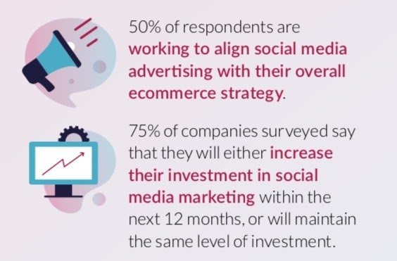
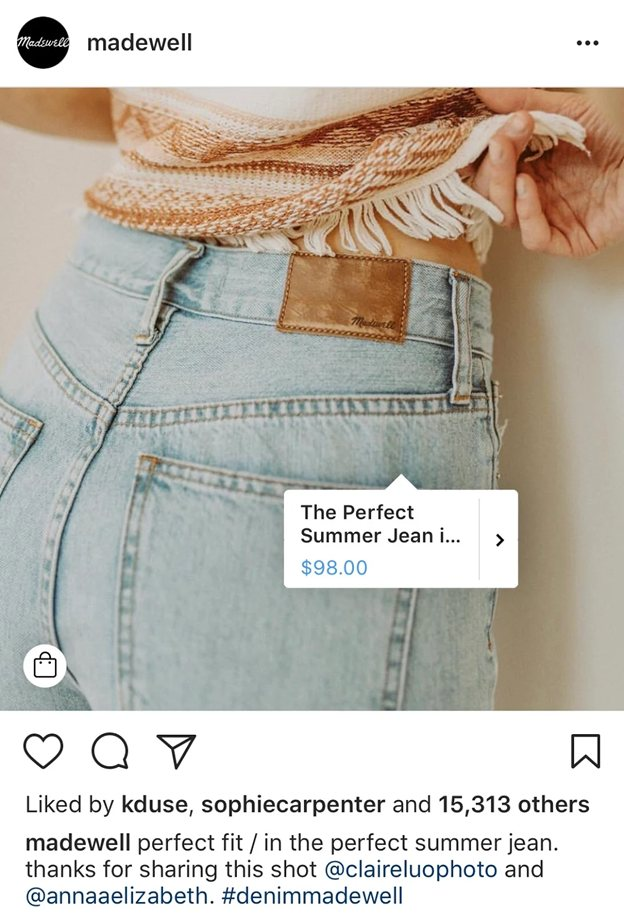

Ecommerce has just started to surpass physical store deals. As indicated by a U.S. Business Department report, the complete piece of online U.S. retail deals was higher than general product deals last February. It’s simple to perceive the reason why brands are progressively organizing their interest in online deals.
An ongoing review of more than 200 retail chiefs found that half of the retail marks are attempting to adjust web-based media promotions with their general eCommerce system.
Social commerce is the utilization of systems administration sites, for example, using Facebook, Instagram, Pinterest and Twitter as a pathway to advance and sell items and services. The achievement is estimated by how much purchasers cooperate with the organization’s advertising through retweets, likes, and offers. Keep reading to understand more about the same.

Understanding Social Commerce
- Welcoming clients to decide on item style
- Offering customized purchaser choices
- Utilizing recordings to show how the item gets used
- Including User Generated Content
- Utilizing VIP supports for product promotion
- Connecting legitimately to the checkout
- Create giveaways and offer lucrative discount/prizes to clients who share the item on their feeds
Top Benefits of Social Commerce
- Steady Audience Growth
As indicated by Statista, Facebook has over a billion dynamic clients every month, and numerous new clients join each hour. Hence, if you are involved in social trading through FB, you can witness steady growth in your audience base.
- Higher Search Engine Ranking
It has been demonstrated that social media business builds traffic to your site, which will, in the end, impact your positioning on search engine ranking. It additionally permits your crowd to draw in with a remark and offer to contact a significantly bigger crowd.
Pillars of Social Commerce
- An incredible method to connect with your crowd is by addressing the individual clients. That may sound tedious, yet, it will, in general, give the desired result.
- The accomplishment of a social commerce methodology is estimated in the information. This assists in settling on a firm decision.
- Brands would now be able to follow a client’s geological area too.
- Understanding the audience can be done by a survey or review.
- Working on UGC is a must when you want to grow your trade through social commerce methodology.
How to turn Social Engagement into First-Time Buyers: Social Commerce?
- Put resources into the Right Channels
There’s an enormous range of social and computerized stages that individuals around the globe utilize each day. Nonetheless, brands have limited spending plans and assets to put towards advanced promotions. Most of the brands use social media automation tools to schedule their content in advance and keep the audience engaged.

But, only when you know your customers better, can you provide them what you need. Then, you can also earn their faith.
Which social media channels do they use to peruse and share content? When do they ordinarily utilize those channels? Knowing these will help you turn social engagement into first-time buyers. Make sure to research the channels before blindly starting-off with automation.
- Continuously be Optimizing
As new stages develop, and your clients’ practices keep on advancing, so should be your social trade procedure. Because a specific channel or system has worked before, that doesn’t mean it will be productive later on. Advertisers today have the shopper information readily available, yet the difficult part understands everything.
Putting resources into investigation stages can help you proficiently orchestrate enormous datasets. Hence understanding the assets and going on its flow favours you in turning your social engagement to long-term buyers.
- Influence Social Checkout Features
When somebody’s looking something through their preferred social media feed, and they find an item that they need to purchase, the exact thing a brand needs to do is motivate the consumers to purchase it.
Adding the checkout page or cart links can favour you by directing them straight away to the purchase page. Likewise, the instant superintendence makes them agree to purchase.
- On-site Social Proof and Shoppable Content
Brands should be making it simple for individuals to shop on social stages. Adding pictures into your eCommerce approach is additionally a demonstrated method to support online commitment, just as deals.
Clients are 6x bound to buy an item if the page incorporates pictures from web-based media. Make an intuitive lookbook or visual index to drive individuals legitimately to buy.

- Influence User-Generated Content
UGC – the pictures, recordings, and surveys that individuals post on informal communities – is seen as the most trusted, bona fide, and powerful thing by buyers, making it an extraordinarily significant asset for advertisers to use. Truth be told, UGC is viewed as 9.8x more powerful than conventional influencer content.
This pattern focuses on the way that the present social influencers are nearer to scripted television stars.
- Morally Embrace Chatbots
Portable application and chatbots has become a central route for retailers to connect with, educate, and elevate their clients’ items. Specifically, Facebook Messenger chatbots have gotten a top retail choice, giving brands immediately with 1:1 consistently on connections with customers.
- Unite with Influencers
As of now, influencers have an inherent crowd that trusts and listens to what they need to state. By collaborating with pertinent social records, you can take advantage of those crowds to build your reach and produce more sales.
You can even get your clients on board as influencers. Inspire them to share content about your image or items through a hashtag campaign, testimonials, or things like that. Studies show that clients love to partake in programs this way. Hence, it is easy for you to work on this.
- Offer the Right Suggestion
Nowadays, customers aspire to get the right suggestions on their feed. As a seller, you can analyze their past performance and provide them with the desired suggestions. A proposal like this has driven 49% of customers to purchase an item they didn’t embark on buying yet. The strategy can be especially helpful for web-based media promotions.
Final thoughts
Social commerce is one of the advanced methods that every business can work on. It is also considered to be reliable and authentic. Because it mainly works on the principle of UGC. Additionally, you can choose any one of the channels and start your trade, for example, Instagram, Facebook, etc. We hope this article suffices your requirements. Happy reading!
Author Bio:
Sukriti is an Outreach Specialist at BloggingMile, a book lover, and a blogger. She is an innovator & wants to explore more, learn more, and try different tools, hacks with various campaigns. She loves reading non-fiction books in her free time.
Leave a Reply